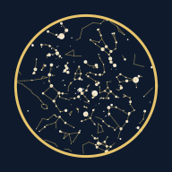

Drodzy Mieszkańcy, przygotowałam dla Was aplikację, w której Kobyłka mieści się w kieszeni: odpady, wydarzenia, sprawy do załatwienia w Urzędzie i niebo nad naszym miastem. Jest otwarta dla wszystkich radnych, więc swoją sprawę możecie przekazać radnemu, którego wybierzecie.
Edyta Zbieć, radna Rady Miasta Kobyłka
Coś nie działa albo czegoś brakuje?
Zgłoś dziurę, zgasłą latarnię, potrzebę przejścia dla pieszych. Aplikacja przygotuje pismo do Urzędu, przypilnuje terminu odpowiedzi i w razie potrzeby przygotuje ponaglenie.
Odpady
Gdzie to wyrzucić?
Kolory pojemników według zasad ogólnopolskich, listy według kobylka.pl.
Kalendarz Kobyłki
Kupuj od sąsiada
Firmy i usługi z Kobyłki. Zadzwoń, napisz, odwiedź. Pieniądze zostają w naszym mieście.
Prowadzisz firmę w Kobyłce?
Dodaj ją do katalogu firm lokalnych. Wpis jest bezpłatny.
Wybierz, czego dotyczy sprawa. Aplikacja wskaże, gdzie najszybciej to załatwić, i przygotuje pismo do Urzędu Miasta.
Dotknij mapy, żeby zaznaczyć dokładne miejsce.
Twoje dane do pisma
Zostają w Twoim telefonie i na Twoim koncie. Urząd potrzebuje imienia, nazwiska i adresu, żeby odpowiedzieć.
Moje sprawy
Panel radnego
Widzisz sprawy, które mieszkańcy przekazali Tobie.
Ważne telefony i adresy
Niebo nad Kobyłką
Tak wygląda niebo teraz. Północ u góry, wschód po lewej.
Twoje dane
Aplikacja nie wysyła Twoich danych na żaden serwer. Sprawy, pisma i zdjęcia zostają w pamięci Twojego telefonu. Pismo do Urzędu wysyłasz sam(a): e-mailem, przez ePUAP lub gov.pl albo w kancelarii. Gdy przekazujesz sprawę radnemu, wysyłasz ją ze swojej skrzynki e-mail na adres radnego; od tej chwili za Twoje dane w tej sprawie odpowiada ten radny. Wyczyszczenie danych przeglądarki usuwa sprawy z telefonu.
Aplikacja mieszkańców i radnych Kobyłki. Inicjatywa radnej Edyty Zbieć, otwarta dla wszystkich radnych Rady Miasta. To nie jest usługa Urzędu Miasta Kobyłka. Pisma wysyłasz sam(a) albo przekazujesz wybranemu radnemu. Mapy: GUGiK (BDOT10k). Gwiazdy: HYG Database i Stellarium (CC BY-SA). Odpady i wydarzenia: kobylka.pl.

Zainstaluj aplikację
Kobyłka na ekranie Twojego telefonu, także bez internetu.